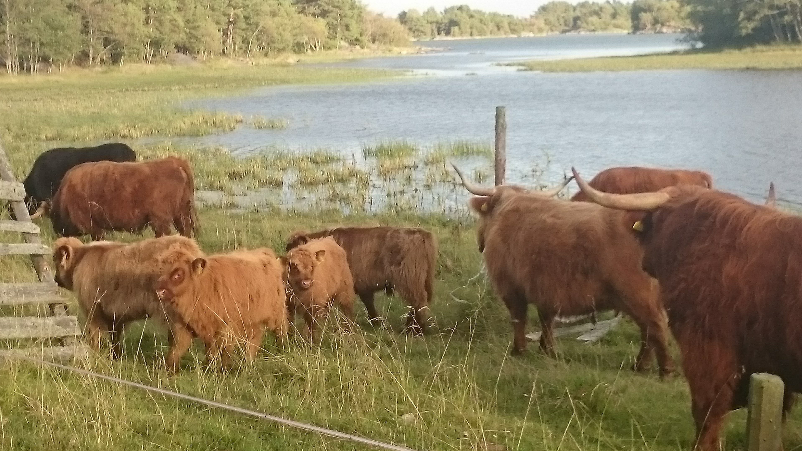

Luodaan käynnistyskomentojono komennolla
Copy Con Autoexec.bat.
Komento luo käynnistystiedoston ja kirjoittaa siihen kaiken, mitä
näppäimistöltä syötetään,
kunnes käyttäjä painaa CTRL C -näppäinyhdistelmää. Eikö olekin kätevää?
Lue lisää Wikipediasta,
joka avautuu uuteen ikkunaan:
Kuva voi myös toimia linkkinä, ja nyt se avataan tämän sivun tilalle:

Linkkejä voi luoda myös sivun sisälle, esim. otsikkoon, jolle on määritelty
ID DOS Palaa sivun ensimmäiseen otsikkoon Tämä on kätevää
silloin kun sivun pituus ylittää ruudun koon.